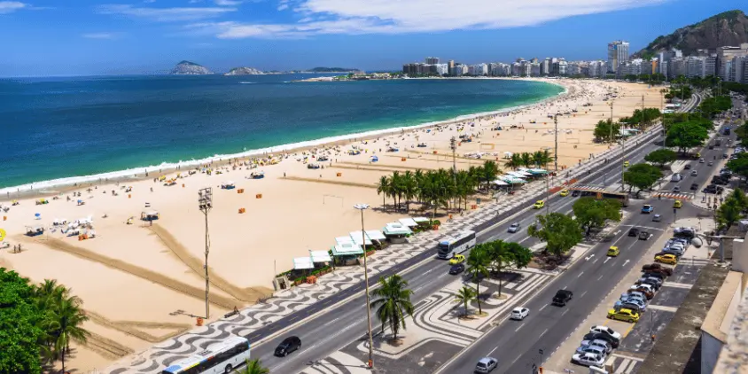
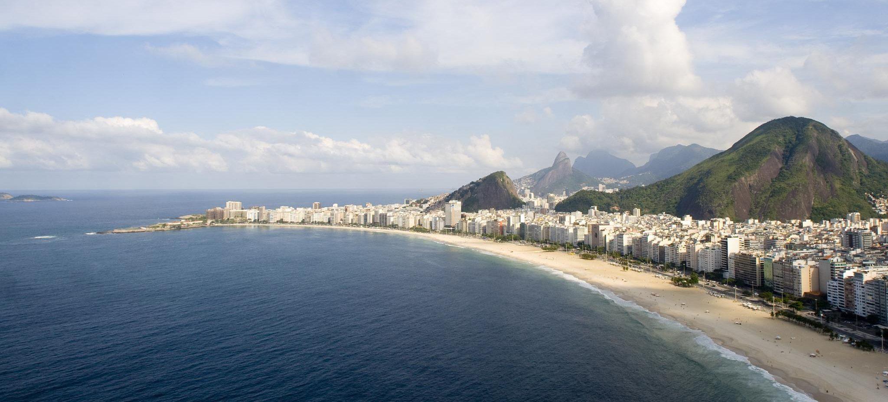

Copacabana - RJ



Restaurantes recomendados
- Nossa primeira recomendação é o restaurante Marius, conhecido por sua cozinha brasileira e mediterrânea.
- A segunda recomendação é para quem gosta de uma boa comida italiana. O La Trattoria possui excelentes opções no menu e um ambiente super agradável.
- Por último, indicamos o Joaquina Bar, localizado em plena Avenida Atlântica, com muitas opções de petiscos e um chopp bem gelado.
O que fazer em Copacabana?
- O clássio: curtir a praia e seu famoso calçadão. É possível praticar alguma atividade física e, na sequência, dar um mergulho no mar para refrescar, pegar um bronze, e apreciar as belezas naturais do Rio.
- Forte de Copacabana: por apenas R$ 10,00 é possível conhecer um pouco mais da história do Rio de Janeiro (e também do Brasil) no charmoso Museu de Copacabana. Além disso, pode-se tomar um delicioso café na famosa Confeitaria Colombo e aprecisar um pouco da arquitetura brasileira imperial.
- Feira noturna: após um curtir a praia durante o dia, o calçadão abre espaço para uma feira com diversas barracas e que funciona todos os dias, das 18h até meia noite. Lá você irá encontrar muitas opções de souveniers para levar para casa, além de diversas opções de comidas.